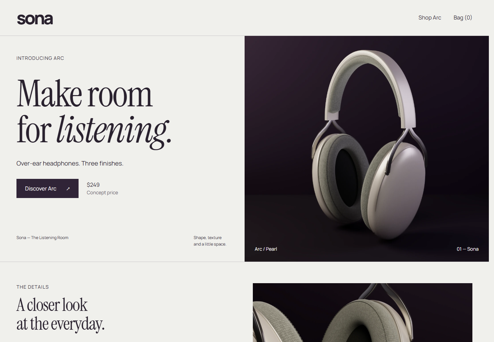
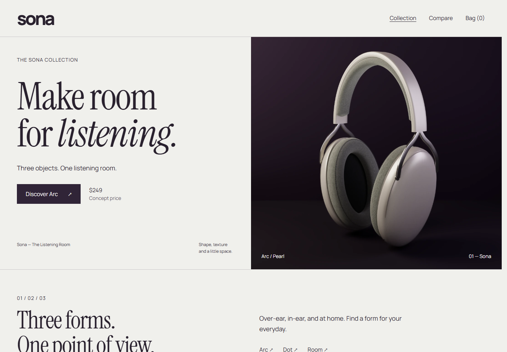
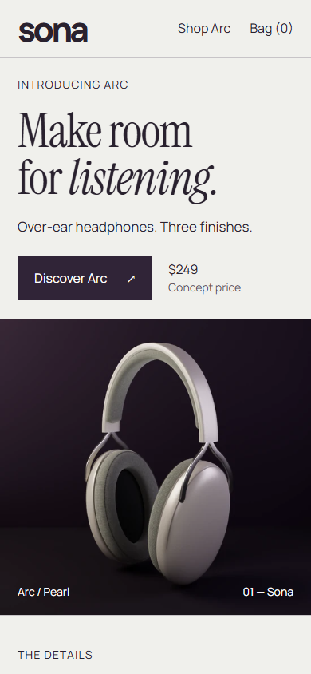
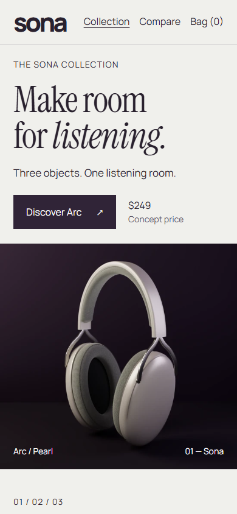
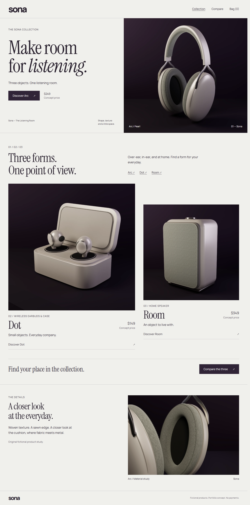
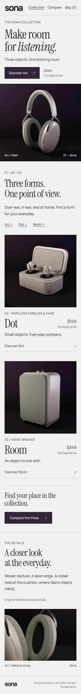
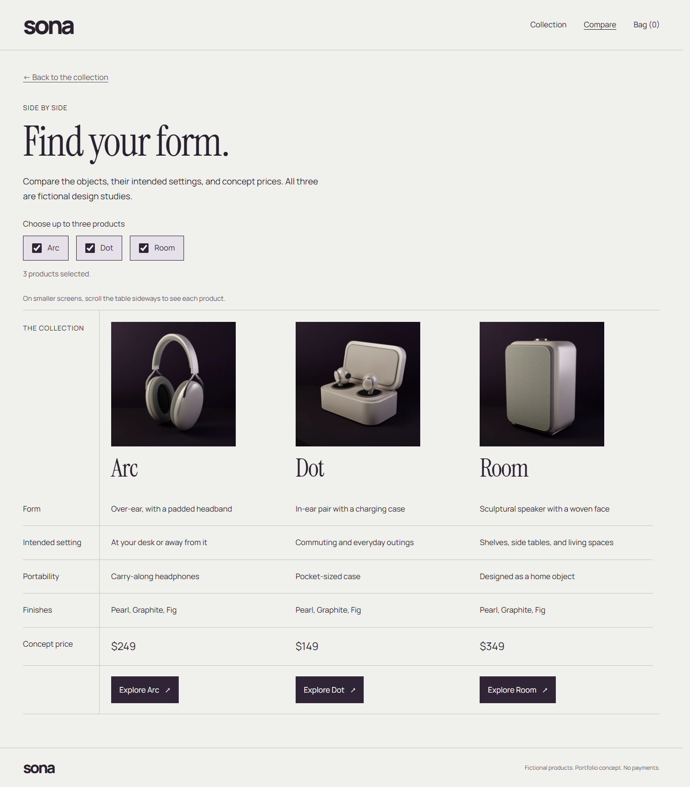
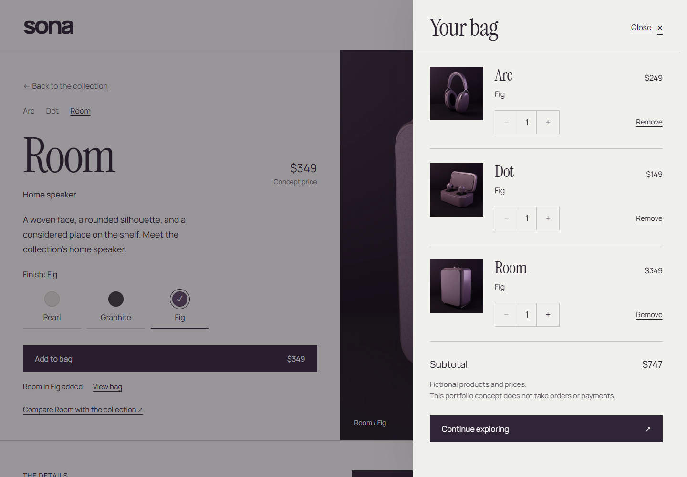
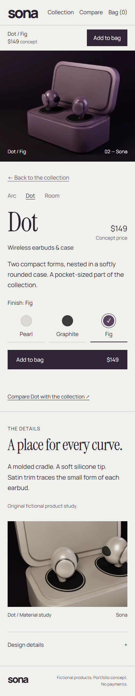
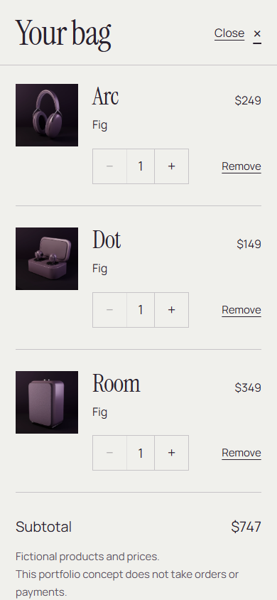

Sona — the complete collection
Actual Chrome screenshots at 100% page scale, September 29, 2026. “Before” is the existing Arc milestone. The new collection preserves its typography and opening while adding Dot, Room, comparison and a mixed-product bag. Phone views are emulation on Windows.
Open the local storefront · Try comparison
Desktop opening

Before — existing Arc milestone
After — collection navigation and introductionPhone opening

Before — 390×844
After — the early product appearance is preservedThe complete homepage

Asymmetric collection, distinct original forms and full material study.
Responsive vertical composition.Comparison and shopping

Semantic product comparison.
Three separate Fig variants, $747 concept subtotal.Phone product and bag

Dot — shared shopping architecture, purpose-made macro.
Native scrolling bag and reachable quantity controls.All products and prices are fictional. No publication or public-profile update has occurred.